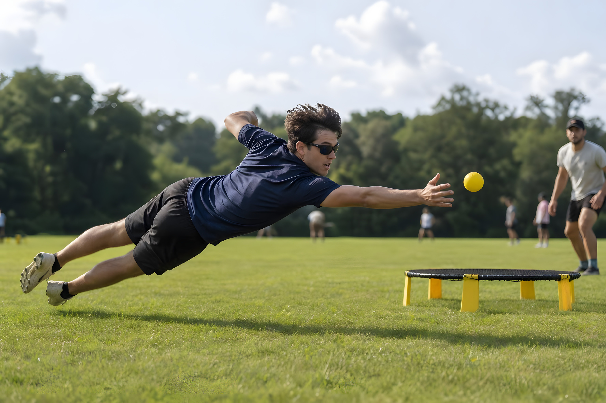

MASTER LEAGUE
Voor ervaren spelers die hun vaardigheden willen testen tegen andere sterke tegenstanders. Dit is een officieel puntentoernooi waarbij rankingpunten te verdienen zijn.
Deelnameprijs wordt later bekendgemaakt.
MASTER LEAGUE ↗
SOCIALE MEDIA
Links naar de officiële sociale media worden nog aangevuld.